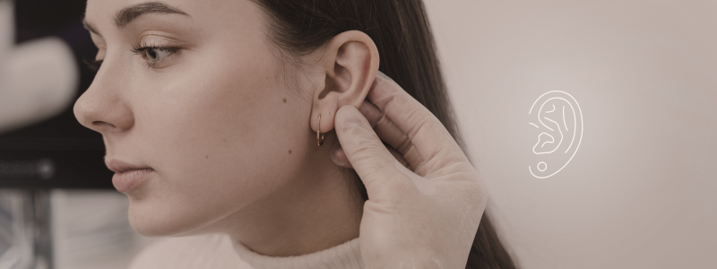

O que é?
A lobuloplastia é um procedimento cirúrgico que visa corrigir deformidades no lóbulo da orelha, a parte inferior da orelha onde se colocam os brincos. Essas deformidades podem ser congênitas (presentes desde o nascimento) ou adquiridas, como resultado do uso de alargadores, brincos pesados ou acidentes.
Quando é indicada?
➡️ Lóblulos rasgados: O uso de brincos pesados ou alargadores pode levar ao rasgamento do lóbulo, parcial ou total (lóbulo bífido).
➡️ Lóbulos alargados: O lóbulo pode apresentar um furo muito grande, que não suporta mais brincos.
➡️ Lóbulos de tamanho aumentado: O lóbulo pode ser naturalmente grande ou ter aumentado com o tempo.
➡️ Lóbulos com cicatrizes: Cicatrizes resultantes de perfurações mal feitas ou acidentes podem ser removidas ou melhoradas com a lobuloplastia.
➡️ Correção estética: Algumas pessoas optam pela lobuloplastia para melhorar a aparência dos lóbulos das orelhas, tornando-os mais simétricos e proporcionais ao rosto.
➡️ Lóbulos com formatos indesejados: O lóbulo pode ter um formato irregular ou assimétrico.
➡️ Lóbulos afastados da cabeça: O lóbulo pode estar excessivamente afastado da cabeça.
➡️ Sequelas de traumas: Lesões no lóbulo podem causar deformidades.
➡️ Prévio a colocação de piercings: A lobuloplastia pode ser realizada antes da colocação de piercings para garantir que o lóbulo esteja em boas condições e possa suportar o peso do piercing.
Como é feita?
O procedimento é geralmente realizado com anestesia local e pode durar de 30 minutos a 1 hora.
O cirurgião remove o excesso de pele ou tecido do lóbulo e, em seguida, sutura as bordas do tecido
para remodelar o lóbulo.
Em alguns casos, pode ser necessário remover um triângulo de tecido para reduzir o tamanho do lóbulo.
Recuperação
➡️ A lobuloplastia é um procedimento ambulatorial, o que significa que o paciente pode retornar para casa no mesmo dia.
➡️ Geralmente, não é necessário repouso absoluto, mas é recomendado evitar atividades físicas que possam causar impacto na região operada por alguns dias.
➡️ Os pontos são removidos entre 7 e 14 dias após a cirurgia.
➡️ O resultado final da lobuloplastia pode ser observado após alguns meses, quando a cicatrização estiver completa.
➡️ É fundamental comparecer às consultas de acompanhamento com o médico para avaliar a evolução da cicatrização e fazer os ajustes necessários.
É importante seguir as orientações do médico para garantir uma recuperação adequada e minimizar o risco de complicações.
Preparação para a lobuloplastia
A preparação para a lobuloplastia geralmente envolve seguir as orientações
do médico, que podem incluir evitar certos medicamentos que aumentem
o risco de sangramento, realizar exames pré-operatórios e seguir as instruções sobre
jejum e higiene. Além disso, é importante discutir com o médico suas expectativas e
esclarecer todas as dúvidas durante a consulta inicial.
➡️ É importante informar ao médico sobre qualquer alergia, condição médica pré-existente ou medicamentos em uso.
➡️ O médico pode recomendar evitar o uso de medicamentos que aumentem o risco de sangramento, como aspirina e anti-inflamatórios, alguns dias antes da cirurgia.
➡️ É importante seguir as orientações sobre jejum, que geralmente incluem evitar alimentos e líquidos algumas horas antes da cirurgia.
➡️ É recomendado lavar bem os cabelos e a face com um sabonete antisséptico na véspera da cirurgia.
➡️ Evitar refeições muito fartas ou bebidas alcoólicas na véspera da cirurgia.
Cuidados após a lobuloplastia
Após a lobuloplastia, é crucial seguir os cuidados recomendados pelo
médico para otimizar a recuperação e evitar complicações:
➡️ É recomendado o uso de curativos por alguns dias, que devem ser removidos e limpos conforme orientação médica.
➡️ O médico pode recomendar o uso de analgésicos e anti-inflamatórios para controlar a dor e o inchaço.
➡️ Evitar pressão ou trauma na área operada, especialmente ao dormir.
➡️ É recomendado evitar atividades físicas intensas por pelo menos 48 horas após a cirurgia e seguir as orientações do médico sobre o tempo de repouso necessário.
➡️ É recomendado evitar a exposição direta ao sol na área operada por alguns meses para prevenir o escurecimento da cicatriz.
➡️ O uso de brincos leves pode ser permitido após algumas semanas, mas é importante seguir as orientações do médico sobre o tempo de espera para furar as orelhas novamente.
➡️ Evitar puxar ou esticar o lóbulo operado, pois isso pode prejudicar a cicatrização e afetar o resultado final da lobuloplastia.
➡️ É importante retornar ao consultório para a retirada dos pontos e acompanhamento da recuperação.
Benefícios
A lobuloplastia, ou correção do lóbulo da orelha, oferece
diversos benefícios estéticos e psicológicos. Além de
restaurar a aparência natural dos lóbulos, corrigindo
rasgos ou alongamentos, o procedimento devolve a autoestima
e permite o uso confortável de brincos novamente. É um procedimento
relativamente rápido, seguro, com recuperação rápida e cicatrizes discretas.
➡️ A lobuloplastia é ideal para quem possui lóbulos danificados por brincos pesados, alargadores ou acidentes, restaurando a forma original.
➡️ O procedimento visa devolver a forma e a simetria naturais dos lóbulos, eliminando deformidades e imperfeições.
➡️ A correção estética do lóbulo pode aumentar a confiança e a satisfação com a própria imagem, permitindo que a pessoa se sinta mais confortável em usar brincos e em situações sociais.
➡️ Após a recuperação, a pessoa pode voltar a usar brincos, o que pode ser um fator importante para muitas mulheres e homens.
➡️ A lobuloplastia é geralmente realizada sob anestesia local, com rápida recuperação e baixos riscos de complicações.
➡️ As cicatrizes resultantes da lobuloplastia são geralmente pequenas e discretas, tornando-se quase imperceptíveis com o tempo.
Quer voltar a usar brincos ou sentir-se mais confiante?
A Lobuloplastia é um procedimento simples que corrige lóbulos danificados,
devolvendo a autoestima e a liberdade.
Invista no seu bem-estar e agende sua consulta hoje mesmo!
 Agende seu horário
Agende seu horário